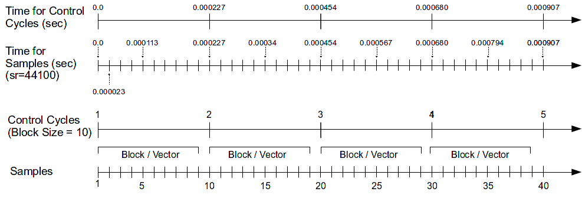
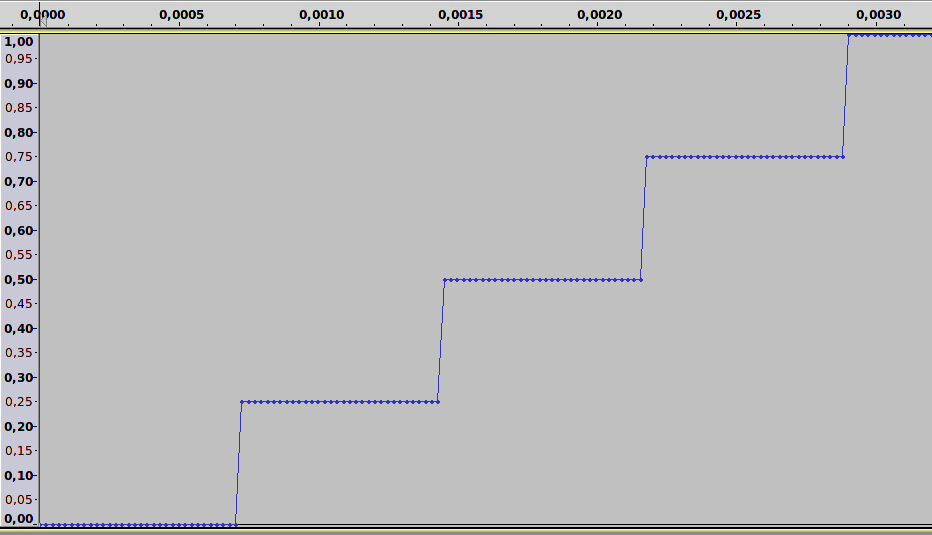
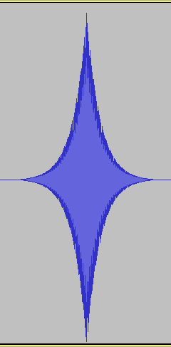
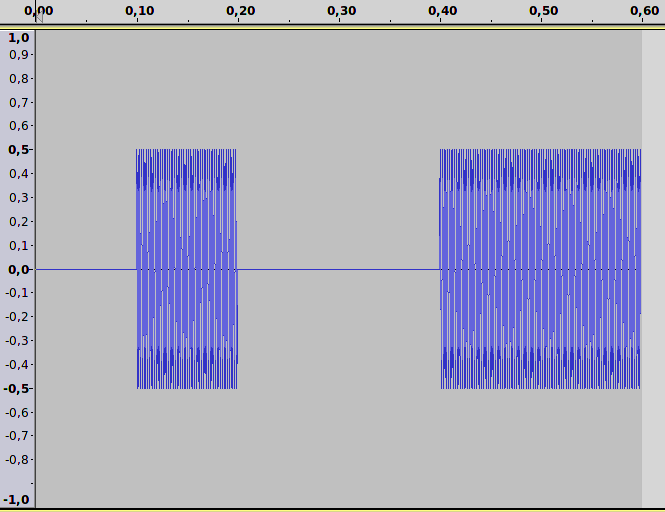
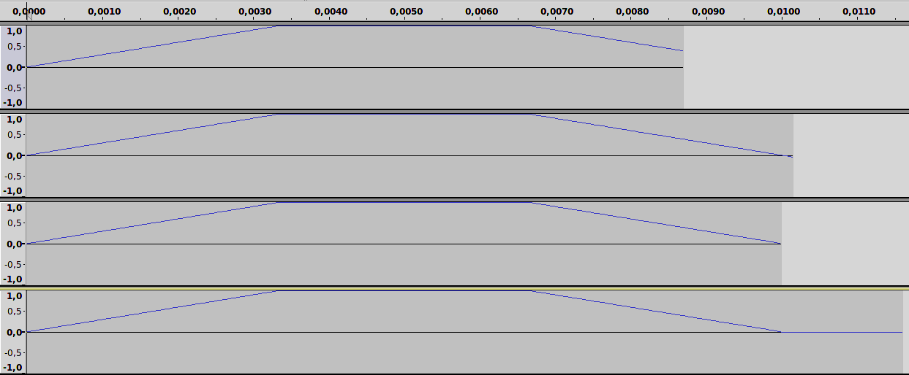

CSOUND Español
PASADAS DE INICIALIZACIÓN Y EJECUCIÓN
No sólo para los principiantes, sino también para los usuarios experimentados de Csound, muchos de los problemas que se presentan son producto de malentendidos respecto de los llamados ciclos-i y ciclos-k. Por ejemplo, cuando se desea que Csound haga algo por única vez, pero Csound lo hace repetidamente. O a la inversa, cuando se quiere que Csound haga algo continuadamente, pero lo hace sólo una vez. Si experimenta estos síntomas, lo más probable es que haya confundido las variables de ciclo-i con las de ciclo-k.
El modelo conceptual que sustenta esto en verdad no es tan complicado. Cuando pensamos en el flujo de un programa, esto es algo que se menciona implícitamente, pero en Csound es necesario hacerlo explícito. De este modo, cuando usamos Csound tendemos a olvidarlo y no notamos cuando inadvertidamente solicitamos al lenguaje convertir peras en manzanas. Este capítulo intenta explicar cuidadosamente la diferencia entre las peras y las manzanas, y cómo se puede sacar provecho de ellas, después de haber comprendido y aceptado la naturaleza diferente de ambas.
La Pasada de Inicialización
Cuando se llama a un instrumento en Csound en todas las variables se establecen valores iniciales. Esto se denomina pasada de inicialización.
Hay ciertas variables que permanecen en el estado en el que han sido puestas por la pasada de inicialización. Dichas variables comienzan con la letra i si son locales (esto es, sólo significan algo dentro de un instrumento), o con el prefijo gi si son globales (es decir, cuyo nombre es visible desde cualquier lugar dentro de la Orquesta). Este es un ejemplo sencillo:
EXAMPLE 03A01_Init-pass.csd
<CsoundSynthesizer>
<CsInstruments>
giGlobal = 1/2
instr 1
iLocal = 1/4
print giGlobal, iLocal
endin
instr 2
iLocal = 1/5
print giGlobal, iLocal
endin
</CsInstruments>
<CsScore>
i 1 0 0
i 2 0 0
</CsScore>
</CsoundSynthesizer>
;ejemplo por joachim heintz
La salida a consola debería incluir las siguientes líneas:
SECTION 1:
new alloc for instr 1:
instr 1: giGlobal = 0.500 iLocal = 0.250
new alloc for instr 2:
instr 2: giGlobal = 0.500 iLocal = 0.200
Como se ve, las variables locales iLocal tienen diferentes significados en el contexto de cada instrumento en particular, mientras que giGlobal es visible en todas partes y -a menos que se modifique- siempre mantiene su valor. También vale la pena mencionar que la duración de los instrumentos (p3) es igual a cero. Esto no es un error y en este ejemplo tiene sentido ya que los instrumentos son llamados, pero sólo se realiza la pasada de incialización.
La Pasada de Ejecución
Después de asignar valores iniciales a todas las variables, Csound inicia la ejecución propiamente dicha. Como la música es una variación de los valores en el tiempo,2 las señales de audio constantemente están conteniendo valores que varían en el tiempo. En todo audio digital, la unidad de tiempo viene dada por la tasa de muestreo, y una muestra es el átomo de tiempo más pequeño posible. Para una frecuencia de muestreo de 44100Hz,3 una muestra posee una duración de 1/44100 = 0,0000227 segundos.
Por lo tanto, la ejecución en una aplicación de audio significa básicamente: computar todas las muestras que se escribirán finalmente en la salida. Esto se puede imaginar como la cooperación entre un reloj y una calculadora. Para cada muestra, el reloj marca un tick y para cada tick, se calcula la siguiente muestra.
La mayoría de las aplicaciones de audio no realizan este cálculo de las muestras una por una. Es mucho más eficiente recolectar cierta cantidad de muestras en un "bloque" o "vector" y calcularlas todas juntas. Esto significa, de hecho, la utilización de otro reloj interno en su aplicación; un reloj que marca los ticks con una frecuencia menor que el reloj que equivale a la tasa de muestreo. Por ejemplo, asumiendo que su frecuencia de muestreo es 44100 Hz, si el tamaño de bloque consta de 10 muestras, el reloj interno que producirá cada bloque marcará un tick cada 1/4410 = 0.000227 segundos. Si, en cambio, su tamaño de bloque consta de 441 muestras, el reloj marcará cada 1/100 = 0.01 segundos.
La ilustración siguiente muestra un tamaño de bloque de 10 muestras. Las muestras se ilústran en la línea inferior. Inmediatamente arriba se encuentran los ticks de control, uno por cada diez muestras. Las dos líneas superiores muestran el tiempo de ambos relojes en segundos. En la línea superior se ve que el primer ciclo de control ha terminado a los 0,000227 segundos, el segundo a los 0,000454 segundos, y así sucesivamente.4

La tasa (frecuencia) de estos ticks se denomina tasa de control en Csound. Por una razón histórica,5 se llama "tasa de kontrol" en lugar de "tasa de control", y por lo tanto se abrevia como kr en lugar de cr. Cada uno de los ciclos de cálculo se denomina "ciclo-k". El tamaño del bloque o tamaño del vector viene dado en consecuencia por el parámetro ksmps que responde a la siguiente pregunta: ¿cuántas muestras (smps) se calculan para un ciclo-k?.6
Veamos algunos ejemplos de código para ilustrar estos contextos básicos.
Incremento Implícito
EXAMPLE 03A02_Perf-pass_incr.csd
<CsoundSynthesizer> <CsInstruments> sr = 44100 ksmps = 4410 instr 1 kCount init 0; set kcount to 0 first kCount = kCount + 1; increase at each k-pass printk 0, kCount; print the value endin </CsInstruments> <CsScore> i 1 0 1 </CsScore> </CsoundSynthesizer> ;example by joachim heintz
La salida a consola debería contener estas líneas:
i 1 time 0.10000: 1.00000
i 1 time 0.20000: 2.00000
i 1 time 0.30000: 3.00000
i 1 time 0.40000: 4.00000
i 1 time 0.50000: 5.00000
i 1 time 0.60000: 6.00000
i 1 time 0.70000: 7.00000
i 1 time 0.80000: 8.00000
i 1 time 0.90000: 9.00000
i 1 time 1.00000: 10.00000
Un contador (kCount) se establece en cero como valor inicial. Luego, en cada ciclo de control, el contador se incrementa en uno. Lo que se percibe entonces es el comportamiento típico de un bucle. El bucle no ha sido establecido de forma explícita, pero funciona implícitamente a causa del recálculo continuo de todas las variables-k. De modo que también podemos hablar de los ciclos-k como si se tratara de un bucle-k implícito (y activado por un reloj).7 Intente cambiar el valor de ksmps de 4410 a 8820 y luego a 2205 y observe la diferencia.
El siguiente ejemplo interpreta el incremento de kCount como el valor de una frecuencia en ascenso. El primer instrumento, denominado Rise, fija la frecuencia de ciclo-k kFreq al valor inicial de 100 Hz, y luego añade 10 Hz en cada nuevo ciclo-k. Como ksmps = 441, un ciclo-k toma 1/100 de segundo para ejecutarse. Así que en 3 segundos, la frecuencia sube de 100 a 3100 Hz. En el último ciclo-k, se imprime el valor de la frecuencia final a la que se ha arribado.8 - El segundo instrumento, Partials, incrementa el contador en uno por cada ciclo-k, pero sólo lo considera como la nueva frecuencia por cada 100 repeticiones. De esta manera, la frecuencia se mantiene en 100 Hz durante un segundo, luego en 200 Hz durante otro segundo, y así sucesivamente. Como las frecuencias resultantes están comprendidas en la relación 1 : 2 : 3 ..., escuchamos armónicos basados en una fundamental de 100 Hz, desde el primero hasta el 31º. El opcode printk2 imprime el valor de la frecuencia siempre y cuando ésta haya cambiado.
EXAMPLE 03A03_Perf-pass_incr_listen.csd
<CsoundSynthesizer> <CsOptions> -o dac </CsOptions> <CsInstruments> sr = 44100 ksmps = 441 0dbfs = 1 nchnls = 2 ;build a table containing a sine wave giSine ftgen 0, 0, 2^10, 10, 1 instr Rise kFreq init 100 aSine poscil .2, kFreq, giSine outs aSine, aSine ;increment frequency by 10 Hz for each k-cycle kFreq = kFreq + 10 ;print out the frequency for the last k-cycle kLast release if kLast == 1 then printk 0, kFreq endif endin instr Partials ;initialize kCount kCount init 100 ;get new frequency if kCount equals 100, 200, ... if kCount % 100 == 0 then kFreq = kCount endif aSine poscil .2, kFreq, giSine outs aSine, aSine ;increment kCount kCount = kCount + 1 ;print out kFreq whenever it has changed printk2 kFreq endin </CsInstruments> <CsScore> i "Rise" 0 3 i "Partials" 4 31 </CsScore> </CsoundSynthesizer> ;example by joachim heintz
Init vs. =
Un error frecuente es establecer la variable-k utilizando kCount = 0, en lugar de kCount init 0. El significado de ambas sentencias tiene una diferencia significativa. kCount init 0 establece el valor de kCount en cero sólo durante la pasada de de inicialización, sin afectarlo durante la pasada de ejecución. kCount = 1, en cambio, establece el valor para kCount en cero una y otra vez, durante cada ciclo de ejecución. De modo que el incremento comienza siempre desde el mismo punto, y en consecuencia el valor resultante se percibe como una constante luego del incremento:
EXAMPLE 03A04_Perf-pass_no_incr.csd
<CsoundSynthesizer> <CsInstruments> sr = 44100 ksmps = 4410 instr 1 kcount = 0; sets kcount to 0 at each k-cycle kcount = kcount + 1; does not really increase ... printk 0, kcount; print the value endin </CsInstruments> <CsScore> i 1 0 1 </CsScore> </CsoundSynthesizer> ;example by joachim heintz
Salida a consola:
i 1 time 0.10000: 1.00000
i 1 time 0.20000: 1.00000
i 1 time 0.30000: 1.00000
i 1 time 0.40000: 1.00000
i 1 time 0.50000: 1.00000
i 1 time 0.60000: 1.00000
i 1 time 0.70000: 1.00000
i 1 time 0.80000: 1.00000
i 1 time 0.90000: 1.00000
i 1 time 1.00000: 1.00000
Una Mirada al Vector de Audio
Hay diferentes opcodes para imprimir el contenido de las variables-k.9 No existe un opcode en Csound para imprimir el contenido de un vector de audio directamente, pero se puede usar el opcode vaget para ver lo que acontece con las muestras de audio durante un ciclo de control.
EXAMPLE 03A05_Audio_vector.csd
<CsoundSynthesizer> <CsInstruments> sr = 44100 ksmps = 5 0dbfs = 1 instr 1 aSine oscils 1, 2205, 0 kVec1 vaget 0, aSine kVec2 vaget 1, aSine kVec3 vaget 2, aSine kVec4 vaget 3, aSine kVec5 vaget 4, aSine printks "kVec1 = % f, kVec2 = % f, kVec3 = % f, kVec4 = % f, kVec5 = % f\n",\ 0, kVec1, kVec2, kVec3, kVec4, kVec5 endin </CsInstruments> <CsScore> i 1 0 [1/2205] </CsScore> </CsoundSynthesizer> ;example by joachim heintz
La salida a consola muestra estas líneas:
kVec1 = 0.000000, kVec2 = 0.309017, kVec3 = 0.587785, kVec4 = 0.809017, kVec5 = 0.951057
kVec1 = 1.000000, kVec2 = 0.951057, kVec3 = 0.809017, kVec4 = 0.587785, kVec5 = 0.309017
kVec1 = -0.000000, kVec2 = -0.309017, kVec3 = -0.587785, kVec4 = -0.809017, kVec5 = -0.951057
kVec1 = -1.000000, kVec2 = -0.951057, kVec3 = -0.809017, kVec4 = -0.587785, kVec5 = -0.309017
En este ejemplo, el número de muestras de audio en un ciclo k se establece en cinco mediante la instrucción ksmps = 5. El primer argumento a vaget especifica qué muestra del bloque obtendrá. Por ejemplo,
kVec1 vaget 0, aSine
obtiene el primer valor del vector de audio y lo escribe en la variable kVec1. Para una frecuencia de 2205 Hz a una frecuencia de muestreo de 44100 Hz, se necesitan 20 muestras para escribir un ciclo completo de la sinusoide. Entonces llamamos al instrumento durante 1/2205 segundos, y obtenemos 4 ciclos-k. La impresión a consola muestra exactamente un período de la onda sinusoidal.
Un Ejemplo Que Resume lo Expuesto
Después de haber puesto tanta atención a los diferentes aspectos de la inicialización, de la ejecución y de los vectores de audio, el siguiente ejemplo trata de resumir e ilustrar todos los aspectos según su naturaleza práctica.
EXAMPLE 03A06_Init_perf_audio.csd
<CsoundSynthesizer>
<CsOptions>
-o dac
</CsOptions>
<CsInstruments>
sr = 44100
ksmps = 441
nchnls = 2
0dbfs = 1
instr 1
iAmp = p4 ;amplitude taken from the 4th parameter of the score line
iFreq = p5 ;frequency taken from the 5th parameter
; --- move from 0 to 1 in the duration of this instrument call (p3)
kPan line 0, p3, 1
aNote oscils iAmp, iFreq, 0 ;create an audio signal
aL, aR pan2 aNote, kPan ;let the signal move from left to right
outs aL, aR ;write it to the output
endin
</CsInstruments>
<CsScore>
i 1 0 3 0.2 443
</CsScore>
</CsoundSynthesizer>
;example by joachim heintz
Como ksmps = 441, cada ciclo de control es de 0,01 segundos de longitud (441/44100). Esto es lo que ocurre cuando se realiza la llamada al instrumento:

Accediendo al Valor de Inicialización de una Variable-k.
Se ha dicho que la pasada de inicialización establece valores iniciales para todas las variables. Debe enfatizarse que esto afecta de hecho a todas las variables y no sólo a las variables-i. Es simplemente que las variables-i no se ven afectadas por nada que suceda con posterioridad, durante el tiempo de la ejecución. Pero también las variables-k y las variables-a obtienen valores iniciales en la pasada de inicialización.
Como vimos anteriormente, el opcode init se usa para establecer valores iniciales para variables-k y para variables-a explícitamente. Por otro lado, puede obtener el valor inicial de una variable k que no ha sido definida de forma explícita utilizando la forma i(). Este es un ejemplo sencillo:
EXAMPLE 03A07_Init-values_of_k-variables.csd
<CsoundSynthesizer> <CsOptions> -o dac </CsOptions> <CsInstruments> instr 1 gkLine line 0, p3, 1 endin instr 2 iInstr2LineValue = i(gkLine) print iInstr2LineValue endin instr 3 iInstr3LineValue = i(gkLine) print iInstr3LineValue endin </CsInstruments> <CsScore> i 1 0 5 i 2 2 0 i 3 4 0 </CsScore> </CsoundSynthesizer> ;example by joachim heintz
Salida a consola:
new alloc for instr 1:
B 0.000 .. 2.000 T 2.000 TT 2.000 M: 0.0
new alloc for instr 2:
instr 2: iInstr2LineValue = 0.400
B 2.000 .. 4.000 T 4.000 TT 4.000 M: 0.0
new alloc for instr 3:
instr 3: iInstr3LineValue = 0.800
B 4.000 .. 5.000 T 5.000 TT 5.000 M: 0.0
El instrumento 1 produce una señal-k ascendente, comenzando en cero y terminando en uno, en un lapso de cinco segundos. Los valores del incremento de esta línea se escriben en la variable global gkLine. Después de dos segundos, se llama al instrumento 2, y se examina el valor de gkLine durante su pasada de inicialización (esto es, la del instrumento 2) vía i(gkLine). El valor en este momento (0.4), se imprime a consola durante el tiempo-de-inicialización como iInstr2LineValue. Lo mismo ocurre con el instrumento 3, que se llama recién a los 4 segundos y por lo tanto imprime el valor iInstr3LineValue = 0.800.
La forma i() es particularmente útil cuando se necesita examinar el valor de cualquier señal de control de un widget o de un dispositivo midi, en el momento en que se inicia un instrumento.
Valores-k e Inicialización en Múltiples Llamadas a Instrumentos
¿Qué sucede con una variable-k si un instrumento se llama varias veces? ¿Cuál es el valor de inicialización de esta variable en la primera llamada y en las llamadas posteriores?
Si esta variable no se establece explícitamente, el valor de inicialización durante la primera llamada de un instrumento es cero, tal como sucede usualmente. Pero para las llamadas siguientes la variable-k se inicializará con el valor con el que quedó cuando se apagó la instancia anterior del mismo instrumento.
El ejemplo siguiente demuestra este comportamiento. El instrumento "Call" simplemente llama al instrumento "Called" una vez por segundo, y le envía el número de la llamada. El instrumento "Called" genera la variable kRndVal mediante el uso de un generador aleatorio, e informa sobre:
- el valor de kRndVal durante la inicialización, y
- el valor de kRndVal durante el tiempo de ejecución, es decir, durante el primer ciclo de control.
(Después del primer ciclo-k, el instrumento se apaga inmediatamente.)
EXAMPLE 03A08_k-inits_in_multiple_calls_1.csd
<CsoundSynthesizer> <CsOptions> -nm0 </CsOptions> <CsInstruments> ksmps = 32 instr Call kNumCall init 1 kTrig metro 1 if kTrig == 1 then event "i", "Called", 0, 1, kNumCall kNumCall += 1 endif endin instr Called iNumCall = p4 kRndVal random 0, 10 prints "Initialization value of kRnd in call %d = %.3f\n", iNumCall, i(kRndVal) printks " New random value of kRnd generated in call %d = %.3f\n", 0, iNumCall, kRndVal turnoff endin </CsInstruments> <CsScore> i "Call" 0 3 </CsScore> </CsoundSynthesizer> ;example by joachim heintz
La salida a consola debería mostrar algo similar a esto:
Initialization value of kRnd in call 1 = 0.000
New random value of kRnd generated in call 1 = 8.829
Initialization value of kRnd in call 2 = 8.829
New random value of kRnd generated in call 2 = 2.913
Initialization value of kRnd in call 3 = 2.913
New random value of kRnd generated in call 3 = 9.257
La impresión muestra lo que se mencionaba anteriormente: si no hay un valor anterior para una variable-k, la variable se inicializa con valor cero. Si hay un valor anterior, éste sirve como valor de inicialización.
Pero ¿guarda alguna relevancia este valor de inicialización de las variables-k? En realidad, elegimos un valor de k porque queremos usarlo en el tiempo de ejecución, no en el tiempo de init. El problema es que Csound *realizará* la pasada-de-inicialización para todas las variables k- (y a-), a menos que se le impida de hacerlo explícitamente. Y si, por ejemplo, se genera el índice de un vector en la instancia anterior del mismo instrumento, que está fuera de rango en la inicialización, Csound reportará un error o incluso fallará:
EXAMPLE 03A09_k-inits_in_multiple_calls_2.csd
<CsoundSynthesizer> <CsOptions> -nm0 </CsOptions> <CsInstruments> ksmps = 32 gkArray[] fillarray 1, 2, 3, 5, 8 instr Call kNumCall init 1 kTrig metro 1 if kTrig == 1 then event "i", "Called", 0, 1, kNumCall kNumCall += 1 endif endin instr Called ;get the number of the instrument instance iNumCall = p4 ;set the start index for the while-loop kIndex = 0 ;get the init value of kIndex prints "Initialization value of kIndx in call %d = %d\n", iNumCall, i(kIndex) ;perform the while-loop until kIndex equals five while kIndex < lenarray(gkArray) do printf "Index %d of gkArray has value %d\n", kIndex+1, kIndex, gkArray[kIndex] kIndex += 1 od ;last value of kIndex is 5 because of increment printks " Last value of kIndex in call %d = %d\n", 0, iNumCall, kIndex ;turn this instance off after first k-cycle turnoff endin </CsInstruments> <CsScore> i "Call" 0 1 ;change performance time to 2 to get an error! </CsScore> </CsoundSynthesizer> ;example by joachim heintz
Cuando cambie el tiempo de ejecución a 2 en lugar de 1, obtendrá un error, ya que se le pedirá al vector que devuelva el valor de índice=5. (Pero, como la longitud del vector es 5, el último índice posible es 4). Esta será la salida en este caso:
Initialization value of kIndx in call 1 = 0
Index 0 of gkArray has value 1
Index 1 of gkArray has value 2
Index 2 of gkArray has value 3
Index 3 of gkArray has value 5
Index 4 of gkArray has value 8
Last value of kIndex in call 1 = 5
Initialization value of kIndx in call 2 = 5
PERF ERROR in instr 2: Array index 5 out of range (0,4) for dimension 1
note aborted
El problema es que la expresión gkArray [kIndex] se ejecuta *durante el tiempo de inicialización*. Asimismo la expresión kIndex=0 no tiene ningún efecto en absoluto para el valor de kIndex *duante el tiempo de inicialización*. Si queremos estar seguros de que kIndex es cero también en init-time, debemos escribir esto de forma explícita
kIndex init 0
Tenga en cuenta que esto es *exactamente* lo mismo para los Opcodes Definidos por el Usuario (UDOs)! Si se llama a un UDO dos veces, en la segunda llamada las variables-k tendrán como valor inicial el último valor de la primera llamada, a menos que inicialice la variable-k explicitamente mediante una instrucción init.
El último ejemplo muestra ambas posibilidades, utilizando la inicialización explícita o no, y el efecto resultante.
EXAMPLE 03A10_k-inits_in_multiple_calls_3.csd
<CsoundSynthesizer> <CsOptions> -nm0 </CsOptions> <CsInstruments> ksmps = 32 instr without_init prints "instr without_init, call %d:\n", p4 kVal = 1 prints " Value of kVal at initialization = %d\n", i(kVal) printks " Value of kVal at first k-cycle = %d\n", 0, kVal kVal = 2 turnoff endin instr with_init prints "instr with_init, call %d:\n", p4 kVal init 1 kVal = 1 prints " Value of kVal at initialization = %d\n", i(kVal) printks " Value of kVal at first k-cycle = %d\n", 0, kVal kVal = 2 turnoff endin </CsInstruments> <CsScore> i "without_init" 0 .1 1 i "without_init" + .1 2 i "with_init" 1 .1 1 i "with_init" + .1 2 </CsScore> </CsoundSynthesizer> ;example by joachim heintz
Esta es la salida a consola:
instr without_init, call 1:
Value of kVal at initialization = 0
Value of kVal at first k-cycle = 1
instr without_init, call 2:
Value of kVal at initialization = 2
Value of kVal at first k-cycle = 1
instr with_init, call 1:
Value of kVal at initialization = 1
Value of kVal at first k-cycle = 1
instr with_init, call 2:
Value of kVal at initialization = 1
Value of kVal at first k-cycle = 1
Reinicialización
Como vimos anteriormente, un valor-i no es afectado por el bucle de ejecución. Por lo tanto, no puede esperarse que esto funcione como un incremento:
EXAMPLE 03A11_Init_no_incr.csd
<CsoundSynthesizer> <CsInstruments> sr = 44100 ksmps = 4410 instr 1 iCount init 0 ;set iCount to 0 first iCount = iCount + 1 ;increase print iCount ;print the value endin </CsInstruments> <CsScore> i 1 0 1 </CsScore> </CsoundSynthesizer> ;example by joachim heintz
La salida a consola no es más que:
instr 1: iCount = 1.000
Sin embargo, puede pedírsele a Csound que repita la inicialización de una variable-i. Esto se hace con el opcode reinit. En primer lugar debe marcarse una sección con una etiqueta (cualquier nombre seguido de dos puntos). Luego, la instrucción reinit hará que la variable-i se actualice. Use rireturn para terminar la sección reinit.
EXAMPLE 03A12_Re-init.csd
<CsoundSynthesizer> <CsInstruments> sr = 44100 ksmps = 4410 instr 1 iCount init 0 ; set icount to 0 first reinit new ; reinit the section each k-pass new: iCount = iCount + 1 ; increase print iCount ; print the value rireturn endin </CsInstruments> <CsScore> i 1 0 1 </CsScore> </CsoundSynthesizer> ;example by joachim heintz
Salida a consola:
instr 1: iCount = 1.000
instr 1: iCount = 2.000
instr 1: iCount = 3.000
instr 1: iCount = 4.000
instr 1: iCount = 5.000
instr 1: iCount = 6.000
instr 1: iCount = 7.000
instr 1: iCount = 8.000
instr 1: iCount = 9.000
instr 1: iCount = 10.000
instr 1: iCount = 11.000
Lo que sucede aquí es lo siguiente. En la pasada-de-inicialización real, iCount se pone a cero a través de iCount init 0. Aún en este init-pass, se incrementa en uno (iCount = iCount 1) y el valor se imprime como iCount = 1.000. Luego comienza la primer pasada-de-ejecución. La sentencia reinit new demanda a Csound que vuelva a inicializar la sección etiquetada como nueva. Así, la sentencia iCount = iCount + 1 se ejecuta de nuevo. Como el valor actual de iCount en este momento es 1, el resultado es 2. Por lo tanto, la impresión en este primer pase de rendimiento es iCount = 2.000. Lo mismo ocurre en los próximos nueve ciclos de rendimiento, por lo que el recuento final es 11.
Orden de Cómputo
En este contexto, puede ser muy importante observar el orden en que se evalúan los instrumentos de una orquesta de Csound. Este orden está determinado por los números de instrumento. Por lo tanto, si desea utilizar durante la misma pasada-de-ejecución un valor en el instrumento 10 que a su vez es generado por otro instrumento, no debe dar a ese último instrumento un número superior o igual a 11. En el ejemplo siguiente, el instrumento 10 utiliza un valor del instrumento 1; luego, un valor del instrumento 100.
EXAMPLE 03A13_Order_of_calc.csd
<CsoundSynthesizer> <CsInstruments> sr = 44100 ksmps = 4410 instr 1 gkcount init 0 ;set gkcount to 0 first gkcount = gkcount + 1 ;increase endin instr 10 printk 0, gkcount ;print the value endin instr 100 gkcount init 0 ;set gkcount to 0 first gkcount = gkcount + 1 ;increase endin </CsInstruments> <CsScore> ;first i1 and i10 i 1 0 1 i 10 0 1 ;then i100 and i10 i 100 1 1 i 10 1 1 </CsScore> </CsoundSynthesizer> ;Example by Joachim Heintz
La salida a consola muestra la diferencia:
new alloc for instr 1:
new alloc for instr 10:
i 10 time 0.10000: 1.00000
i 10 time 0.20000: 2.00000
i 10 time 0.30000: 3.00000
i 10 time 0.40000: 4.00000
i 10 time 0.50000: 5.00000
i 10 time 0.60000: 6.00000
i 10 time 0.70000: 7.00000
i 10 time 0.80000: 8.00000
i 10 time 0.90000: 9.00000
i 10 time 1.00000: 10.00000
B 0.000 .. 1.000 T 1.000 TT 1.000 M: 0.0
new alloc for instr 100:
i 10 time 1.10000: 0.00000
i 10 time 1.20000: 1.00000
i 10 time 1.30000: 2.00000
i 10 time 1.40000: 3.00000
i 10 time 1.50000: 4.00000
i 10 time 1.60000: 5.00000
i 10 time 1.70000: 6.00000
i 10 time 1.80000: 7.00000
i 10 time 1.90000: 8.00000
i 10 time 2.00000: 9.00000
B 1.000 .. 2.000 T 2.000 TT 2.000 M: 0.0
El instrumento 10 puede utilizar los valores que el instrumento 1 ha producido en el mismo ciclo de control, pero sólo puede referirse a los valores del instrumento 100 que ya hayan sido producidos en el ciclo de control anterior. Por esta razón, la impresión muestra valores que equivalen a números con una diferencia de 1.
Instrumentos con Nombre
Se ha dicho en el capítulo 02B (Inicio Rápido) que en lugar de un número también se puede utilizar un nombre para un instrumento. Esta puede ser una práctica preferible ya que de este modo pueden utilizarse nombres significativos, conduciendo a un código más fácil de seguir. Pero ¿qué pasa con el orden de cómputo en los instrumentos con nombre?
La respuesta es simple: Csound los calcula en el mismo orden en que están escritos en la orquesta. Así que si su orquesta es como la siguiente...
EXAMPLE 03A14_Order_of_calc_named.csd
<CsoundSynthesizer> <CsOptions> -nd </CsOptions> <CsInstruments> instr Grain_machine prints " Grain_machine\n" endin instr Fantastic_FM prints " Fantastic_FM\n" endin instr Random_Filter prints " Random_Filter\n" endin instr Final_Reverb prints " Final_Reverb\n" endin </CsInstruments> <CsScore> i "Final_Reverb" 0 1 i "Random_Filter" 0 1 i "Grain_machine" 0 1 i "Fantastic_FM" 0 1 </CsScore> </CsoundSynthesizer> ;example by joachim heintz
... puede contar con que la salida a consola será la siguiente:
new alloc for instr Grain_machine:
Grain_machine
new alloc for instr Fantastic_FM:
Fantastic_FM
new alloc for instr Random_Filter:
Random_Filter
new alloc for instr Final_Reverb:
Final_Reverb
Nótese que la partitura no tiene el mismo orden. Pero internamente Csound transforma todos los nombres en números, en el orden en que se escriben de arriba a abajo. Los números utilizados se informan en la parte superior de la salida a consola que realiza Csound10:
instr Grain_machine uses instrument number 1
instr Fantastic_FM uses instrument number 2
instr Random_Filter uses instrument number 3
instr Final_Reverb uses instrument number 4
Acerca de los Opcodes de "tiempo-i" y "ciclo-k"
A menudo es confuso para los principiantes que haya algunos opcodes que sólo funcionan en "tiempo-i", y otros que sólo funcionan "tiempo-k". Por ejemplo, si el usuario quiere imprimir el valor de cualquier variable, piensa: "OK - imprímalo". Pero Csound responde: "Por favor, dígame primero si quiere imprimir una "variable-i" o una "variable-k".11
El opcode print sólo imprime variables que se actualizan en cada paso de inicialización ("tiempo-i" o "ciclo-i"). Si desea imprimir una variable que se actualiza en cada ciclo de control ("tiempo-k" o "ciclo-k"), necesita su contraparte printk. (Como la pasada de ejecución generalmente corresponde a una actualización de algunas miles de veces por segundo, printk posee un parámetro adicional para informar a Csound la frecuencia con la que desea imprimir los valores-k).
Por lo tanto, algunos opcodes son sólo para las variables de ciclo-i, como filelen o ftgen. Otros son sólo para las variables de ciclo-k como metro o max_k. Muchos opcodes tienen variantes para variables de ciclo-i o de ciclo-k, tales como printf_i y printf, sprintf y sprintfk, strindex y strindexk.
La mayoría de los opcodes de Csound son capaces de trabajar ya sea en tiempo-i, en tiempo-k o en tiempo-a (tiempo de audio), pero debe pensarse cuidadosamente lo que se necesita, ya que el comportamiento será muy diferente si se elige la variante i- k- o a- de un opcode. Por ejemplo, el opcode random puede funcionar a las tres frecuencias:
ires random imin, imax : works at "i-time" kres random kmin, kmax : works at "k-rate" ares random kmin, kmax : works at "audio-rate"
Si utiliza el random de ciclo-i, obtendrá un valor para cada nota. Entonces si desea obtener un tono diferente para cada nota que está generando, probablemente necesite usar esta variante.
Si utiliza el random de ciclo-k, obtendrá un nuevo valor en cada ciclo de control. Si su tasa de muestreo es 44100 y su ksmps = 10, obtendrá 4410 nuevos valores por segundo! Si se toma esto como valor del tono para una nota, no oirá más que un cambio de tono cercano al ruido. Para casos así, puede usar la variante randomi del generador de ciclo-k, que puede reducir el número de nuevos valores por segundo e interpolar entre ellos.
Si utiliza la variante de ciclo-a, obtendrá tantos nuevos valores por segundo como su tasa de muestreo y si lo usa en el rango de su amplitud de 0 dB, produce ruido blanco.
EXAMPLE 03A15_Random_at_ika.csd
<CsoundSynthesizer>
<CsOptions>
-odac
</CsOptions>
<CsInstruments>
sr = 44100
ksmps = 32
0dbfs = 1
nchnls = 2
seed 0 ;each time different seed
giSine ftgen 0, 0, 2^10, 10, 1 ;sine table
instr 1 ;i-rate random
iPch random 300, 600
aAmp linseg .5, p3, 0
aSine poscil aAmp, iPch, giSine
outs aSine, aSine
endin
instr 2 ;k-rate random: noisy
kPch random 300, 600
aAmp linseg .5, p3, 0
aSine poscil aAmp, kPch, giSine
outs aSine, aSine
endin
instr 3 ;k-rate random with interpolation: sliding pitch
kPch randomi 300, 600, 3
aAmp linseg .5, p3, 0
aSine poscil aAmp, kPch, giSine
outs aSine, aSine
endin
instr 4 ;a-rate random: white noise
aNoise random -.1, .1
outs aNoise, aNoise
endin
</CsInstruments>
<CsScore>
i 1 0 .5
i 1 .25 .5
i 1 .5 .5
i 1 .75 .5
i 2 2 1
i 3 4 2
i 3 5 2
i 3 6 2
i 4 9 1
</CsScore>
</CsoundSynthesizer>
;example by joachim heintz
Posibles Problemas con el Tamaño del Tick de los ciclos-k
Se ha dicho que por lo general el reloj de ciclo-k se actualiza mucho más lento que el reloj de la muestra (ciclo-a). Para el valor habitual de ksmps = 32, un valor-k se mantendrá constante durante 32 muestras. Esto puede dar lugar a problemas, por ejemplo, si utiliza envolventes de ciclo-k. Supongamos que desea producir un desvanecimiento muy corto de 3 milisegundos y lo hace con la siguiente línea de código:
kFadeIn linseg 0, .003, 1
Su envolvente se verá así:

Such a "staircase-envelope" is what you hear in the next example as zipper noise. The transeg opcode produces a non-linear envelope with a sharp peak:
Esta "envolvente en escalera" es lo que se escucha en el siguiente ejemplo como ruido de cremallera. El opcode transeg produce una envolvente no lineal con un pico agudo:

El ataque y la extinción son cada uno de 1/100 segundos de duración. Si esta envolvente se produce en ciclos-k con un tamaño de bloques de 128 (instr 1), el ruido es claramente audible. Intente cambiar ksmps a 64, 32 o 16 y compare la cantidad de "ruido de cremallera". - El instrumento 2 utiliza una envolvente igual a la tasa de muestreo. Independientemente del tamaño del bloque, cada muestra se calcula separadamente, por lo que la envolvente siempre será suave.
EXAMPLE 03A16_Zipper.csd
<CsoundSynthesizer>
<CsOptions>
-o dac
</CsOptions>
<CsInstruments>
sr = 44100
;--- increase or decrease to hear the difference more or less evident
ksmps = 128
nchnls = 2
0dbfs = 1
instr 1 ;envelope at k-time
aSine oscils .5, 800, 0
kEnv transeg 0, .1, 5, 1, .1, -5, 0
aOut = aSine * kEnv
outs aOut, aOut
endin
instr 2 ;envelope at a-time
aSine oscils .5, 800, 0
aEnv transeg 0, .1, 5, 1, .1, -5, 0
aOut = aSine * aEnv
outs aOut, aOut
endin
</CsInstruments>
<CsScore>
r 5 ;repeat the following line 5 times
i 1 0 1
s ;end of section
r 5
i 2 0 1
e
</CsScore>
</CsoundSynthesizer>
;example by joachim heintz
Tiempo Imposible
Hay dos relojes internos en Csound. La tasa de muestreo (sr) determina el la frecuencia del audio, mientras que la tasa de control (kr) determina la frecuencia en la que un nuevo ciclo de control se puede iniciar y en la que se puede procesar un nuevo bloque de muestras. En general, Csound no puede iniciar o finalizar ningún evento entre dos ciclos de control.
El siguiente ejemplo utiliza una tasa de control extremadamente pequeña (sólo 10 k-ciclos por segundo) para ilustrar esto.
EXAMPLE 03A17_Time_Impossible.csd
<CsoundSynthesizer> <CsOptions> -o test.wav -d </CsOptions> <CsInstruments> sr = 44100 ksmps = 4410 nchnls = 1 0dbfs = 1 instr 1 aPink oscils .5, 430, 0 out aPink endin </CsInstruments> <CsScore> i 1 0.05 0.1 i 1 0.4 0.15 </CsScore> </CsoundSynthesizer>
La primera llamada avisa al instrumento 1 que inicie la ejecución durante el tiempo 0.05. Pero esto es imposible ya que se encuentra entre dos ciclos de control. La segunda llamada comienza en un tiempo posible, pero la duración de 0.15 de nuevo no coincide con la tasa de control. Así que el resultado inicia la primera llamada en el tiempo 0.1 y extiende la segunda llamada a 0.2 segundos:

Con Csound6, las posibilidades de estas "intersecciones" se amplían a través de la opción --sample-accurate. La imagen siguiente muestra cómo una envolvente de 0.01 segundos generada por el código
a1 init 1 a2 linen a1, p3/3, p3, p3/3 out a2
(y una llamada de 0.01 segundos con sr=44100) se muestra en los siguientes casos:
- ksmps=128
- ksmps=32
- ksmps=1
- ksmps=128 y --sample-accurate habilitado.

Este es el efecto:
- Con ksmps = 128, falta la última sección de la envolvente. La razón es que, con sr = 44100 Hz, 0,01 segundos contienen 441 muestras. 441 muestras divididas por el tamaño de bloque (ksmps) de 128 muestras producen 3,4453125 bloques. Esto se redondea a 3. Así que sólo 3 * 128 = 384 muestras se generan. Como se ve, la forma de la envolvente se calcula correctamente. Terminaría exactamente en 0,01 segundos ... pero no, porque el bloque ksmps termina demasiado pronto. Así que con esta envolvente podría oírse un clic al final de la nota.
-
Con ksmps = 32, el número de muestras (441) dividido por ksmps produce un valor de 13.78125. Esto se redondea a 14, por lo que el audio procesado es ligeramente más largo que 0,01 segundos (448 muestras).
-
Con ksmps = 1, la envolvente se genera tal como es de esperarse.
-
Con ksmps = 128 y --sample-accurate habilitado, la envolvente es también la correcta. Tenga en cuenta que la sección es ahora 4 * 128 = 512 muestras de largo, pero la envolvente es más precisa que con ksmps = 32.
Por lo tanto, en caso de que experimente clics en envolventes muy cortas, aunque use envolventes de ciclo-a, puede ser necesario establecer ksmps = 1 o habilitar la opción --sample-accurate.
Cuándo Usar Ciclos-i y Ciclos-k
Cuando se escribe un instrumento en Csound, a veces hace falta preguntarse si necesitaremos un opcode de ciclo-i o uno de ciclo-k. Según se dice, la respuesta general es clara: Utilice el ciclo-i para algo que necesite ejcutarse sólo una vez, o de manera puntual. Use el ciclo-k para algo que tenga que hacerse de forma contínua, o si debe considerarse lo que sucede durante la ejecución.
- No obtendría ningún otro resultado si estableció p3 a 1 o cualquier otro valor, ya que aquí no se hace nada excepto la inicialización.^
- 44100 muestras por segundo^
- These are by the way the times which Csound reports if you ask for the control cycles. The first control cycle in this example (sr=44100, ksmps=10) would be reported as 0.00027 seconds, not as 0.00000 seconds.^
- As Richard Boulanger explains, in early Csound a line starting with 'c' was a comment line. So it was not possible to abbreviate control variables as cAnything (http://csound.1045644.n5.nabble.com/OT-why-is-control-rate-called-kontrol-rate-td5720858.html#a5720866). ^
- As the k-rate is directly depending on sample rate (sr) and ksmps (kr = sr/ksmps), it is probably the best style to specify sr and ksmps in the header, but not kr. ^
- This must not be confused with a 'real' k-loop where inside one single k-cycle a loop is performed. See chapter 03C (section Loops) for examples.^
- The value is 3110 instead of 3100 because it has already been incremented by 10.^
- See the manual page for printk, printk2, printks, printf to know more about the differences.^
- If you want to know the number in an instrument, use the nstrnum opcode. ^
- See the following section 03B about the variable types for more on this subject.^